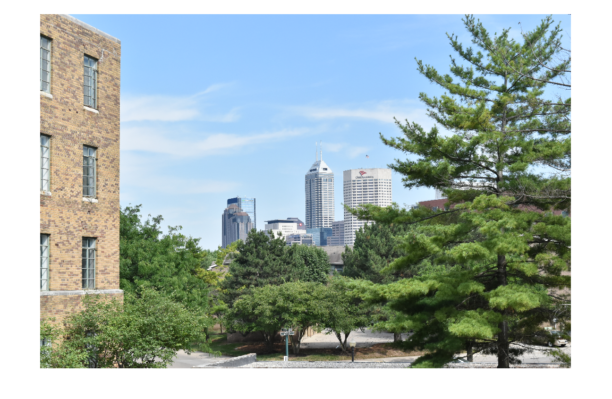

clc %Clear the workspace clear all %Clear the command Window %Read the image in matrix form in the variable named image (size of image=(xmax,ymax,3)) % R value of image is in matrix image(:,:,1) % G value of image is in matrix image(:,:,2) % B value of image is in matrix image(:,:,3) image = imread('C:\Users\Shaunak\Desktop\image1.jpg'); % Xmax = number of pixels in x-axis % Ymax = number of pixels in y-axis % dim = number of matrix dimensions or layers (R,G and B) so 3 [xmax ymax dim]=size(image); %Seperate R G and B from image into 3 different matrices stored in r,g and %b respectively r=image(:,:,1); g=image(:,:,2); b=image(:,:,3); % To convert rgb values to hue hsv_image = rgb2hsv(image); %Display original image (stored in matrix named image(xmax,ymax,3) figure(1); imshow(image); % Display hue image figure(2); hue = hsv_image(:,:,1); %Convert RGB image to HUE image imshow(hsv_image); % Display Gray Image gray = rgb2gray(image); figure(3); imshow(hsv_image(:,:,3)); %For custom HUE generation follow the following. % Values stored in variable "gray1" % the R value is decreased gray1(:,:,1)=r*0.1140; % the R value is increased gray1(:,:,2)=g*0.5580; % the R value is decreased gray1(:,:,3)=b*0.5580; % the below to display the gray1 image' figure(4); imshow(gray1);
Warning: Image is too big to fit on screen; displaying at 25% Warning: Image is too big to fit on screen; displaying at 25% Warning: Image is too big to fit on screen; displaying at 25% Warning: Image is too big to fit on screen; displaying at 25%